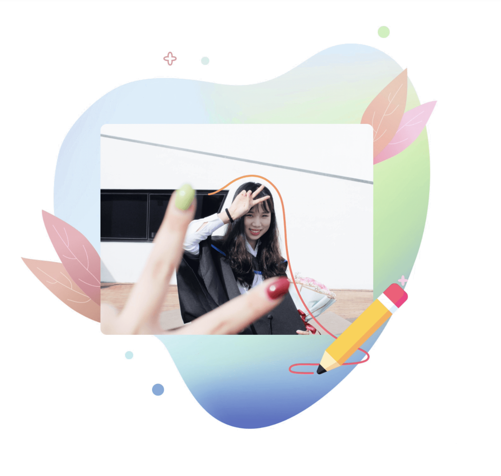

Hi, I'm Cyan
As an UX/UI designer with specialties in user research and interaction design, I enjoy the process of tranferring promotion goals to deliverable UX features.
I'm a fan of fantasy stories and a watersport lover currently pursuing my graduate degree at the University of Michigan.
What I love is communicating and connecting with people, which is the reason to start my UX career. It is my hope to create more humanized interactions that provide benefits to both the company and their customers.
I had experience as a UXUI designer, HCI researcher, graphic designer, and media operator previously. My specification is in user research and website design that can build brand awareness and trust.
